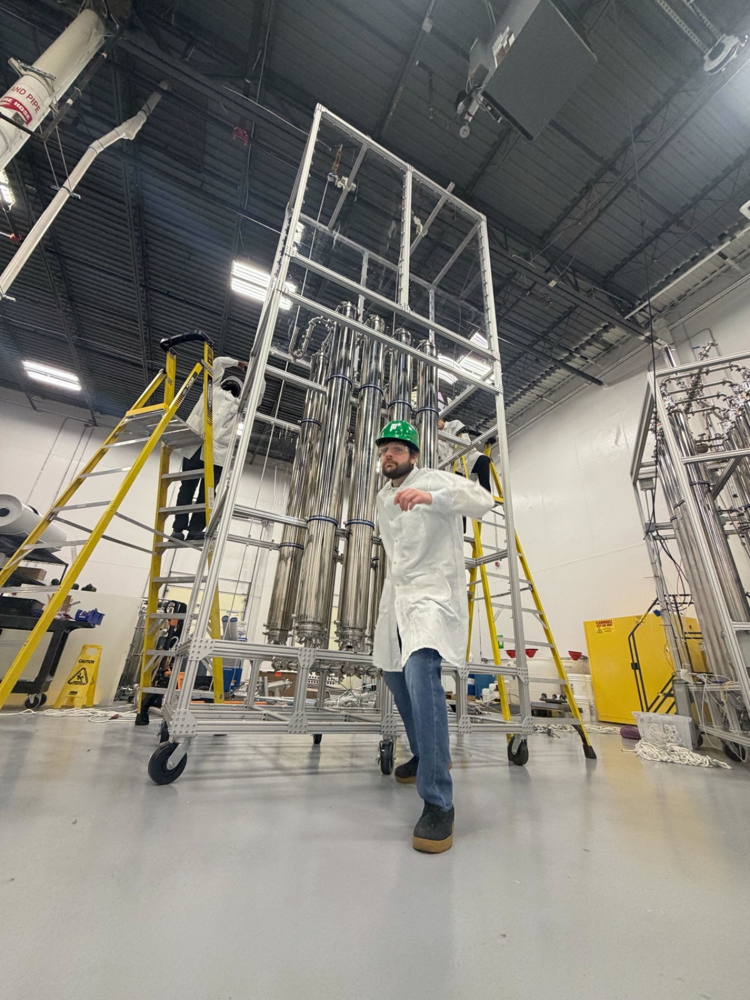
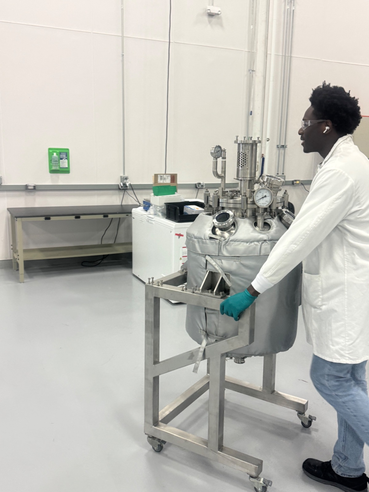

We hire engineers, scientists, and operators who can hold the whole stack in their head: molecule, reactor, factory, customer. If that's you, read on.
We believe innovation happens at the interface between disciplines. Our metabolic engineers help shape our bioreactor design, and our electrical engineers understand how our biology works.
Every program has a clear owner, a clear scope, and a clear definition of done. Then we move. We default to action: once the path is clear, we take it. Owners push from first experiment to final outcome.
Hard things are hard. If we haven't failed, that means we haven't pushed far enough toward the boundary. We treat every failure as evidence that we are working on something worth doing.
You'll own the analytical methods that keep every program moving, quantifying products, intermediates, and impurities across our pipeline. We're looking for a chemist who can scope and develop new methods fast, and knows their way around chromatography (GC, GC-MS, HPLC, LC-MS), spectroscopy (UV-Vis, FTIR, NMR), and the wet-chemistry fundamentals to back them up. You'll work shoulder to shoulder with the strain, process, and downstream teams in the Sterling lab.
An open-call internship for undergrads (or recent grads) who want real hands-on experience in biomanufacturing and chemical production. You'll work alongside our bioreactor and process teams on the Sterling production floor, running reactors, sampling, prepping media, helping with downstream workups, and learning the daily rhythm of a working biomanufacturing facility. No prior industry experience required; curiosity, care with lab work, and willingness to be on-site full-time matter most.
Don't see your role? Send us a note anyway — we're always interested in meeting strong engineers, scientists, and operators.


All applications go to a real person. Tell us what you'd want to build at Capra and why.